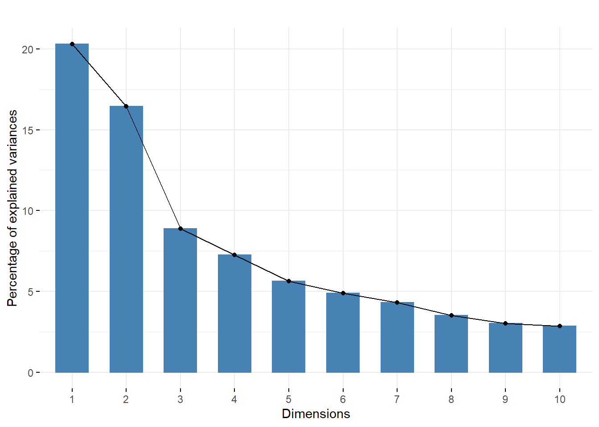

Chapter 5 CAPÍTULO N° 5 - Clustering
5.1 Objetivos de este capítulo
Estudie los diferentes tipos de datos que se pueden agrupar de manera beneficiosa.
Ver medidas de (des)similitud y distancias que nos ayudan a definir clusters.
Descubra el agrupamiento oculto o latente dividiendo los datos en más reducidos.
Utilice la agrupación cuando se le den biomarcadores en cada una de cientos de miles de células. Veremos que, por ejemplo, las células inmunitarias se pueden agrupar naturalmente en subpoblaciones estrechas.
Ejecutar algoritmos no paramétricos como \(k\)-significa , \(k\)-medoides en datos reales de una sola celda.
Experimente con enfoques recursivos de agrupamiento que combinen observaciones y grupos en una jerarquía de conjuntos; estos métodos se conocen como agrupamiento jerárquico .
Estudie cómo validar clústeres a través de enfoques de arranque basados en remuestreo, que demostraremos en un conjunto de datos de una sola celda.
5.2 ¿Qué son los datos y por qué los agrupamos?
#PAQUETES
library(pacman)
p_load("MASS","RColorBrewer","ggplot2")Distancia basada en correlación
set.seed(101)
n <- 60000
S1=matrix(c(1,.72,.72,1), ncol=2)
S2=matrix(c(1.5,-0.6,-0.6,1.5),ncol=2)
mu1=c(.5,2.5)
mu2=c(6.5,4)
X1 = mvrnorm(n, mu=c(.5,2.5), Sigma=matrix(c(1,.72,.72,1), ncol=2))
X2 = mvrnorm(n,mu=c(6.5,4), Sigma=matrix(c(1.5,-0.6,-0.6,1.5),ncol=2))
# A color palette from blue to yellow to red
k = 11
my.cols <- rev(brewer.pal(k, "RdYlBu"))
plot(X1, xlim=c(-4,12),ylim=c(-2,9), xlab="Orange", ylab="Red", pch='.', cex=1)
points(X2, pch='.', cex=1)
# Draw the colored contour lines
# compute 2D kernel density, see MASS book, pp. 130-131
z1 = kde2d(X1[,1], X1[,2], n=50)
z2 = kde2d(X2[,1], X2[,2], n=50)
contour(z1, drawlabels=FALSE, nlevels=k, col=my.cols, add=TRUE, lwd=2)
contour(z2, drawlabels=FALSE, nlevels=k, col=my.cols, add=TRUE, lwd=2)
points(3.2,2,pch=20,cex=2.2,col="red")
lines(c(3.2,6.5),c(2,4),col="red",lwd=3)
lines(c(3.2,.5),c(2,2.5),col="red",lwd=3)
5.3 5.3.1 Cálculos relacionados con distancias en R
mx = c(0, 0, 0, 1, 1, 1)
my = c(1, 0, 1, 1, 0, 1)
mz = c(1, 1, 1, 0, 1, 1)
mat = rbind(mx, my, mz)
dist(mat)## mx my
## my 1.732051
## mz 2.000000 1.732051dist(mat, method = "binary")## mx my
## my 0.6000000
## mz 0.6666667 0.5000000Puede acceder al conjunto de datos aquí
load("../data/Morder.RData")
sqrt(sum((Morder[1, ] - Morder[2, ])^2))## [1] 5.593667as.matrix(dist(Morder))[2, 1]## [1] 5.593667Veamos cómo calcularíamos la distancia de Jaccard que definimos anteriormente entre las cepas de VIH.
mut = read.csv("../data/HIVmutations.csv")
mut[1:3, 10:16]## p32I p33F p34Q p35G p43T p46I p46L
## 1 0 1 0 0 0 0 0
## 2 0 1 0 0 0 1 0
## 3 0 1 0 0 0 0 05.4 Detección de mezcla no paramétrica
5.4.1 K-métodos: k -significa, k -medoides y PAM
p_load("vegan")
mutJ = vegdist(mut, "jaccard")
mutC = sqrt(2 * (1 - cor(t(mut))))
mutJ## 1 2 3 4
## 2 0.8000000
## 3 0.7500000 0.8888889
## 4 0.9000000 0.7777778 0.8461538
## 5 1.0000000 0.8000000 0.8888889 0.9000000as.dist(mutC)## 1 2 3 4
## 2 1.186342
## 3 1.104026 1.302931
## 4 1.318368 1.133893 1.298780
## 5 1.452966 1.186342 1.302931 1.318368Ejemplo de ejecución de la k -significa algoritmo. Los centros (círculos negros) y grupos (colores) iniciales elegidos al azar se muestran en el panel superior. Los miembros del grupo se asignan en función de su distancia a los centros. En cada iteración, los centros de grupo se redefinen y los puntos se reasignan a los centros de clúster.
set.seed(248811)
Xmat = matrix(runif(100), ncol = 2)
nk = 3
cents = Xmat[sample(nrow(Xmat), nk, replace = FALSE), ]
# default distance: Euclidean
dist1 = function(vec){dist(rbind(vec, cents[1,]))}
dist2 = function(vec){dist(rbind(vec, cents[2,]))}
dist3 = function(vec){dist(rbind(vec, cents[3,]))}
dists123 = cbind(apply(Xmat, 1, dist1),
apply(Xmat, 1, dist2),
apply(Xmat, 1, dist3))
clust0 = apply(dists123, 1, which.min)
out1 = kmeans(Xmat, cents, iter.max=1)## Warning: did not converge in 1 iterationout2 = kmeans(Xmat, cents, iter.max=3)
data0 = data.frame(x = Xmat[,1],
y = Xmat[,2],
cluster = as.factor(clust0))
data1 = data.frame(x = Xmat[,1],
y = Xmat[,2],
cluster = as.factor(out1$cluster))
data2 = data.frame(x = Xmat[,1],
y = Xmat[,2],
cluster = as.factor(out2$cluster))
.mp = function(v, cdg) {
ggplot(data = v, aes(x = x, y = y)) +
geom_point(aes(col = cluster, shape = cluster), size = 5) + xlab("") + ylab("") +
geom_point(data = cdg, fill = "black", size = 7, shape = 1) +
scale_shape_discrete(solid = TRUE, guide = "none") + guides(col = "none") + coord_fixed()
}
# centers of clusters:
cdg = data.frame(x = cents[,1],y = cents[,2])
.mp(data0, cdg)
cents = out1$centers
cdg1 = data.frame(x=cents[,1],y=cents[,2])
.mp(data1, cdg1)cents = out2$centers
cdg2 = data.frame(x=cents[,1],y=cents[,2])
.mp(data2, cdg2)p_load(scRNAseq)
.oldMar = par("mar")
par(mar = c(1.1, 6, 4.1, 1.1))
p_load("clusterExperiment")
fluidigm = scRNAseq::ReprocessedFluidigmData()
se = fluidigm[, fluidigm$Coverage_Type == "High"]
assays(se) = list(normalized_counts =
round(limma::normalizeQuantiles(assay(se))))
ce = clusterMany(se, clusterFunction = "pam", ks = 5:10, run = TRUE,
isCount = TRUE, reduceMethod = "var", nFilterDims = c(60, 100, 150))## 18 parameter combinations, 0 use sequential method, 0 use subsampling method
## Running Clustering on Parameter Combinations...
## done.clusterLabels(ce) = sub("FilterDims", "", clusterLabels(ce))
plotClusters(ce, whichClusters = "workflow", axisLine = -1)par(mar = .oldMar)5.5 Ejemplos de agrupamiento: citometría de flujo y citometría de masas
5.5.1 Citometría de flujo y citometría de masas
p_load("flowCore","flowViz")
fcsB = read.FCS("../data/Bendall_2011.fcs", truncate_max_range = FALSE)
slotNames(fcsB)## [1] "exprs" "parameters" "description"5.5.2 Preprocesamiento de datos
markersB = readr::read_csv("../data/Bendall_2011_markers.csv")## Rows: 10 Columns: 2
## -- Column specification --------------------------------------------------------
## Delimiter: ","
## chr (2): isotope, marker
##
## i Use `spec()` to retrieve the full column specification for this data.
## i Specify the column types or set `show_col_types = FALSE` to quiet this message.mt = match(markersB$isotope, colnames(fcsB))
stopifnot(!any(is.na(mt)))
colnames(fcsB)[mt] = markersB$markerMediciones de celda que muestran un agrupamiento claro en dos dimensiones.
flowPlot(fcsB, plotParameters = colnames(fcsB)[2:3], logy = TRUE)
Intente ejecutar el siguiente código para ver los dos regímenes principales de la transformación: valores pequeños y valores grandes.
v1 = seq(0, 1, length.out = 100)
plot(log(v1), asinh(v1), type = 'l')plot(v1, asinh(v1), type = 'l')
v3 = seq(30, 3000, length = 100)
plot(log(v3), asinh(v3), type= 'l')Este es otro ejemplo de una transformación estabilizadora de varianza.
asinhtrsf = arcsinhTransform(a = 0.1, b = 1)
fcsBT = transform(fcsB,
transformList(colnames(fcsB)[-c(1, 2, 41)], asinhtrsf))
densityplot( ~`CD3all`, fcsB)densityplot( ~`CD3all`, fcsBT)Pregunta
¿Cuántas dimensiones usa el siguiente código para dividir los datos en 2 grupos usando k -medio ?
kf = kmeansFilter("CD3all" = c("Pop1","Pop2"), filterId="myKmFilter")
fres = flowCore::filter(fcsBT, kf)
summary(fres)## Pop1: 33434 of 91392 events (36.58%)
## Pop2: 57958 of 91392 events (63.42%)fcsBT1 = flowCore::split(fcsBT, fres, population = "Pop1")
fcsBT2 = flowCore::split(fcsBT, fres, population = "Pop2")Después de la transformación, estas células se agruparon usando kmeans.
p_load("flowPeaks")
fp = flowPeaks(Biobase::exprs(fcsBT)[, c("CD3all", "CD56")])## step 0, set the intial seeds, tot.wss=14636.9
## step 1, do the rough EM, tot.wss=10278.9 at 0.513 sec
## step 2, do the fine transfer of Hartigan-Wong Algorithm
## tot.wss=10221.1 at 1.294 secplot(fp)
Al graficar puntos que pueblan densamente un área, aquí se usa contornos y sombreado. Esto se hace de la siguiente manera:
flowPlot(fcsBT, plotParameters = c("CD3all", "CD56"), logy = FALSE)
contour(fcsBT[, c(40, 19)], add = TRUE)
p_load("SamSPECTRAL")
mc2 = fcsBT@exprs[,c(40,33)]
head(mc2)## CD3all CD56
## [1,] 4.002830 2.144493
## [2,] -2.318107 1.272534
## [3,] 3.688635 -1.207639
## [4,] 1.440554 -1.530669
## [5,] 3.266283 -1.139235
## [6,] 3.023840 1.055028Intente comparar la salida usando este enfoque con lo que hicimos anteriormente usando lo siguiente:
p_load("ggcyto","labeling")
ggcd4cd8=ggcyto(fcsB,aes(x=CD4,y=CD8))
ggcd4=ggcyto(fcsB,aes(x=CD4))
ggcd8=ggcyto(fcsB,aes(x=CD8))
p1=ggcd4+geom_histogram(bins=60)
p1b=ggcd8+geom_histogram(bins=60)
asinhT = arcsinhTransform(a=0,b=1)
transl = transformList(colnames(fcsB)[-c(1,2,41)], asinhT)
fcsBT = transform(fcsB, transl)
p1t=ggcyto(fcsBT,aes(x=CD4))+geom_histogram(bins=90)
p2t=ggcyto(fcsBT,aes(x=CD4,y=CD8))+geom_density2d(colour="black")
p3t=ggcyto(fcsBT,aes(x=CD45RA,y=CD20))+geom_density2d(colour="black")5.5.3 Agrupamiento basado en la densidad
p_load("dbscan")
mc5 = Biobase::exprs(fcsBT)[, c(15,16,19,40,33)]
res5 = dbscan::dbscan(mc5, eps = 0.65, minPts = 30)
mc5df = data.frame(mc5, cluster = as.factor(res5$cluster))
table(mc5df$cluster)##
## 0 1 2 3 4 5 6 7 8
## 76053 4031 5450 5310 257 160 63 25 43ggplot(mc5df, aes(x=CD4, y=CD8, col=cluster))+geom_density2d()
ggplot(mc5df, aes(x=CD3all, y=CD20, col=cluster))+geom_density2d()Estas dos gráficas muestran los resultados de agrupar con dbscanutilizando cinco marcadores. Aquí solo mostramos las proyecciones de los datos en los planos CD4-CD8 y C3all-CD20.
5.6 Agrupamiento jerárquico
5.6.1 ¿Cómo calcular (des) similitudes entre clústeres agregados?
mc6 = Biobase::exprs(fcsBT)[, c(15, 16, 19, 33, 25, 40)]
res = dbscan::dbscan(mc6, eps = 0.65, minPts = 20)
mc6df = data.frame(mc6, cluster = as.factor(res$cluster))
table(mc6df$cluster)##
## 0 1 2 3 4 5 6
## 91068 34 61 20 67 121 21mc7 = Biobase::exprs(fcsBT)[, c(11, 15, 16, 19, 25, 33, 40)]
res = dbscan::dbscan(mc7, eps = 0.95, minPts = 20)
mc7df = data.frame(mc7, cluster = as.factor(res$cluster))
table(mc7df$cluster)##
## 0 1 2 3 4 5 6 7 8 9 10
## 90249 21 102 445 158 119 19 224 17 20 18## ####trees together par(mfrow)) not working for pheatmap
## library("pheatmap")
## load("../data/d14.RData")
## pheatmap(d14,clustering_distance_rows=d14,treeheight_col =200,
## cellwidth=20,cellheight=10,lwd=5,treeheight_row=0,clustering_method = "single",
## labels_col=1:11,main="single")
## pheatmap(d14,clustering_distance_rows=d14,treeheight_col =200,cellwidth=20,
## cellheight=10,lwd=5,treeheight_row=0,clustering_method = "average",
## labels_col=1:11,main="average")
## pheatmap(d14,clustering_distance_rows=d14,treeheight_col =200,cellwidth=20,
## cellheight=10,lwd=5,treeheight_row=0,clustering_method = "complete",labels_col=1:11,
## main="complete")## load("../data/Msig3transp.RData")
## celltypes=factor(substr(rownames(Msig3transp),7,9))
## status=factor(substr(rownames(Msig3transp),1,3))
## Msig2=as.matrix(Msig3transp)
## rownames(Msig2)=substr(rownames(Msig2),1,9)
## hm1=heatmap(as.matrix(dist(Msig2)))
## Morder=Msig2[hm1$rowInd,]
## save(Morder,file="../data/Morder.RData")
## write.table(Morder,"../data/Morder.txt")# p_load("gplots","pheatmap","RColorBrewer")
# load("../data/Morder.RData")
# celltypes=factor(substr(rownames(Morder),7,9))
# status=factor(substr(rownames(Morder),1,3))
# ##Just the Euclidean distance
# pheatmap(as.matrix(dist(Morder)),cluster_rows=FALSE,
# cluster_cols=FALSE,cellwidth=10,cellheight=10)
# ###Manhattan
# pheatmap(as.matrix(dist(Morder,"manhattan")),cluster_rows=FALSE,
# cluster_cols=FALSE,cellwidth=10,cellheight=10)# pheatmap(corT,clustering_distance_rows=distcor,
# annotation_row=samplesdata[,c("celltypes","status")],
# show_rownames = FALSE, show_colnames = FALSE)
# pheatmap(corT,clustering_distance_rows=distcor,treeheight_row =150,
# annotation_row=samplesdata[,c("celltypes","status")],
# show_rownames = FALSE, show_colnames = FALSE)
# pheatmap(corT,clustering_distance_rows=distcor,treeheight_row =150,
# annotation_row=samplesdata[,c("celltypes","status")],
# treeheight_col =150,
# show_rownames = FALSE, show_colnames = FALSE)
# pheatmap(corT,clustering_distance_rows=distcor,treeheight_row =150,
# annotation_col=samplesdata[,c("celltypes","status")],
# annotation_row=samplesdata[,c("celltypes","status")],
# treeheight_col =150,
# show_rownames = FALSE, show_colnames = FALSE)5.7 Validación y elección del número de clústeres
p_load("dplyr")
simdat = lapply(c(0, 8), function(mx) {
lapply(c(0,8), function(my) {
tibble(x = rnorm(100, mean = mx, sd = 2),
y = rnorm(100, mean = my, sd = 2),
class = paste(mx, my, sep = ":"))
}) %>% bind_rows
}) %>% bind_rows
head(simdat)## # A tibble: 6 x 3
## x y class
## <dbl> <dbl> <chr>
## 1 -2.42 -4.59 0:0
## 2 1.89 -1.56 0:0
## 3 0.558 2.17 0:0
## 4 2.51 -0.873 0:0
## 5 -2.52 -0.766 0:0
## 6 3.62 0.953 0:0simdatxy = simdat[, c("x", "y")] Aquí, conocemos las etiquetas desde que generamos los datos; por lo general, no las conocemos.
ggplot(simdat, aes(x = x, y = y, col = class)) + geom_point() +
coord_fixed()wss = tibble(k = 1:8, value = NA_real_)
wss$value[1] = sum(scale(simdatxy, scale = FALSE)^2)
for (i in 2:nrow(wss)) {
km = kmeans(simdatxy, centers = wss$k[i])
wss$value[i] = sum(km$withinss)
}
ggplot(wss, aes(x = k, y = value)) + geom_col()
El gráfico de barras del estadístico WSS en función de k muestra que el último salto sustancial es justo antes k = 4 . Esto indica que la mejor opción para estos datos es k = 4 .
p_load("fpc","cluster")
CH = tibble(
k = 2:8,
value = sapply(k, function(i) {
p = pam(simdatxy, i)
calinhara(simdatxy, p$cluster)
})
)
ggplot(CH, aes(x = k, y = value)) + geom_line() + geom_point() +
ylab("CH index")p_load("cluster","ggplot2")
pamfun = function(x, k)
list(cluster = pam(x, k, cluster.only = TRUE))
gss = clusGap(simdatxy, FUN = pamfun, K.max = 8, B = 50,
verbose = FALSE)
plot_gap = function(x) {
gstab = data.frame(x$Tab, k = seq_len(nrow(x$Tab)))
ggplot(gstab, aes(k, gap)) + geom_line() +
geom_errorbar(aes(ymax = gap + SE.sim,
ymin = gap - SE.sim), width=0.1) +
geom_point(size = 3, col= "red")
}
plot_gap(gss)
5.7.1 Uso de la estadística de la brecha
Haga una función que grafique la estadística de la brecha como en la Figura 5.27 . Mostrar la salida para el simdatconjunto de datos de ejemplo agrupado con el pamfunción.
p_load("Hiiragi2013")
data("x")Empezamos eligiendo los 50 genes (características) más variables.
selFeats = order(rowVars(Biobase::exprs(x)), decreasing = TRUE)[1:50]
embmat = t(Biobase::exprs(x)[selFeats, ])
embgap = clusGap(embmat, FUN = pamfun, K.max = 24, verbose = FALSE)
k1 = maxSE(embgap$Tab[, "gap"], embgap$Tab[, "SE.sim"])
k2 = maxSE(embgap$Tab[, "gap"], embgap$Tab[, "SE.sim"],
method = "Tibs2001SEmax")
c(k1, k2)## [1] 9 7stopifnot("firstSEmax" == eval(formals(maxSE)$method)[1])plot(embgap, main = "")
cl = pamfun(embmat, k = k1)$cluster
table(pData(x)[names(cl), "sampleGroup"], cl)## cl
## 1 2 3 4 5 6 7 8 9
## E3.25 23 11 1 1 0 0 0 0 0
## E3.25 (FGF4-KO) 0 0 1 16 0 0 0 0 0
## E3.5 (EPI) 2 1 0 0 0 8 0 0 0
## E3.5 (FGF4-KO) 0 0 8 0 0 0 0 0 0
## E3.5 (PE) 0 0 0 0 9 2 0 0 0
## E4.5 (EPI) 0 0 0 0 0 0 0 4 0
## E4.5 (FGF4-KO) 0 0 0 0 0 0 0 0 10
## E4.5 (PE) 0 0 0 0 0 0 4 0 0La estadística de brecha para los Hiiragi2013 .
5.7.2 Validación de clúster mediante bootstrap
clusterResampling = function(x, ngenes = 50, k = 2, B = 250,
prob = 0.67) {
mat = Biobase::exprs(x)
ce = cl_ensemble(list = lapply(seq_len(B), function(b) {
selSamps = sample(ncol(mat), size = round(prob * ncol(mat)),
replace = FALSE)
submat = mat[, selSamps, drop = FALSE]
sel = order(rowVars(submat), decreasing = TRUE)[seq_len(ngenes)]
submat = submat[sel,, drop = FALSE]
pamres = pam(t(submat), k = k)
pred = cl_predict(pamres, t(mat[sel, ]), "memberships")
as.cl_partition(pred)
}))
cons = cl_consensus(ce)
ag = sapply(ce, cl_agreement, y = cons)
list(agreements = ag, consensus = cons)
}p_load(sampling, clue)
iswt = (x$genotype == "WT")
cr1 = clusterResampling(x[, x$Embryonic.day == "E3.25" & iswt])
cr2 = clusterResampling(x[, x$Embryonic.day == "E3.5" & iswt])Confirman la hipótesis de que los datos E.35 se dividen en dos grupos.
ag1 = tibble(agreements = cr1$agreements, day = "E3.25")
ag2 = tibble(agreements = cr2$agreements, day = "E3.5")
p1 <- ggplot(bind_rows(ag1, ag2), aes(x = day, y = agreements)) +
geom_boxplot() +
ggbeeswarm::geom_beeswarm(cex = 1.5, col = "#0000ff40")
mem1 = tibble(y = sort(cl_membership(cr1$consensus)[, 1]),
x = seq(along = y), day = "E3.25")
mem2 = tibble(y = sort(cl_membership(cr2$consensus)[, 1]),
x = seq(along = y), day = "E3.5")
p2 <- ggplot(bind_rows(mem1, mem2), aes(x = x, y = y, col = day)) +
geom_point() + facet_grid(~ day, scales = "free_x")
gridExtra::grid.arrange(p1, p2, widths = c(2.4,4.0))
5.8 El agrupamiento como medio para eliminar el ruido
5.8.1 Observaciones ruidosas con diferentes frecuencias de línea de base
library("mixtools","ggplot2")## Warning: package 'mixtools' was built under R version 4.1.3## mixtools package, version 1.2.0, Released 2020-02-05
## This package is based upon work supported by the National Science Foundation under Grant No. SES-0518772.##
## Attaching package: 'mixtools'## The following object is masked from 'package:gtools':
##
## ddirichletseq1 = rmvnorm(n = 1e3, mu = -c(1, 1), sigma = 0.5 * diag(c(1, 1)))
seq2 = rmvnorm(n = 1e5, mu = c(1, 1), sigma = 0.5 * diag(c(1, 1)))
twogr = data.frame(
rbind(seq1, seq2),
seq = factor(c(rep(1, nrow(seq1)),
rep(2, nrow(seq2))))
)
colnames(twogr)[1:2] = c("x", "y")
ggplot(twogr, aes(x = x, y = y, colour = seq,fill = seq)) +
geom_hex(alpha = 0.5, bins = 50) + coord_fixed()
Simular n=2000variables binarias de longitud len=200que indican la calidad de nsecuenciación de lecturas de longitud len. Para simplificar, supongamos que los errores de secuenciación ocurren de manera independiente y uniforme con probabilidad perr=0.001. Es decir, solo nos importa si una base se llamó correctamente ( TRUE) O no ( FALSE).
n = 2000
len = 200
perr = 0.001
seqs = matrix(runif(n * len) >= perr, nrow = n, ncol = len)dists = as.matrix(dist(seqs, method = "manhattan"))p_load("tibble")
dfseqs = tibble(
k = 10 ^ seq(log10(2), log10(n), length.out = 20),
diameter = vapply(k, function(i) {
s = sample(n, i)
max(dists[s, s])
}, numeric(1)))
ggplot(dfseqs, aes(x = k, y = diameter)) + geom_point()+geom_smooth()### Inferir variantes de secuencia
Las secuencias desreplicadas se leen y luego se ejecuta la eliminación de ruido divisiva y la estimación con el dadafuncionan como en el siguiente código.
simseq10K = replicate(1e5, sum(rpois(200, 0.0005)))
mean(simseq10K)## [1] 0.10143vcd::distplot(simseq10K, "poisson")
derepFs = readRDS(file="../data/derepFs.rds")
derepRs = readRDS(file="../data/derepRs.rds")
p_load("dada2")
ddF = dada(derepFs, err = NULL, selfConsist = TRUE)## Initializing error rates to maximum possible estimate.
## selfConsist step 1 ....................
## selfConsist step 2
## selfConsist step 3
## selfConsist step 4
## selfConsist step 5
## selfConsist step 6
## Convergence after 6 rounds.ddR = dada(derepRs, err = NULL, selfConsist = TRUE)## Initializing error rates to maximum possible estimate.
## selfConsist step 1 ....................
## selfConsist step 2
## selfConsist step 3
## selfConsist step 4
## selfConsist step 5
## selfConsist step 6
## selfConsist step 7
## Convergence after 7 rounds.Para verificar que las tasas de transición de error se hayan estimado razonablemente bien, inspeccionamos el ajuste entre las tasas de error observadas (puntos negros) y las tasas de error ajustadas (líneas negras)
plotErrors(ddF)## Warning: Transformation introduced infinite values in continuous y-axisUna vez que se han estimado los errores, el algoritmo se vuelve a ejecutar en los datos para encontrar las variantes de la secuencia:
dadaFs = dada(derepFs, err=ddF[[1]]$err_out, pool = TRUE)## 20 samples were pooled: 139327 reads in 22977 unique sequences.dadaRs = dada(derepRs, err=ddR[[1]]$err_out, pool = TRUE)## 20 samples were pooled: 139327 reads in 19360 unique sequences.La inferencia de secuencias elimina casi todas las sustituciones y errores de los datos. Fusionamos las secuencias directa e inversa inferidas, mientras eliminamos las secuencias emparejadas que no se superponen perfectamente como control final contra los errores residuales.
mergers = mergePairs(dadaFs, derepFs, dadaRs, derepRs)Producimos una tabla de contingencia.
seqtab.all = makeSequenceTable(mergers[!grepl("Mock",names(mergers))])dadada = unique(vapply(dadaRs, class, character(1)))
stopifnot(is.list(dadaRs), identical("dada", dadada))length(dadaRs)## [1] 20length(dadaFs)## [1] 20class(dadaRs)## [1] "list"names(dadaRs)## [1] "F3D0" "F3D1" "F3D141" "F3D142" "F3D143" "F3D144" "F3D145" "F3D146"
## [9] "F3D147" "F3D148" "F3D149" "F3D150" "F3D2" "F3D3" "F3D5" "F3D6"
## [17] "F3D7" "F3D8" "F3D9" "Mock"mergers = mergePairs(dadaFs, derepFs, dadaRs, derepRs)
class(mergers)## [1] "list"length(mergers)## [1] 20Pregunta
Explora los componentes de los objetos. dadaRsy mergers.
as quimeras son secuencias que se crean artificialmente durante la amplificación por PCR mediante la fusión de dos (en casos raros, más) de las secuencias originales. Para completar nuestro flujo de trabajo de eliminación de ruido, los eliminamos con una llamada a la función removeBimeraDenovo, dejándonos con una tabla de contingencia limpia que usaremos más adelante.
seqtab = removeBimeraDenovo(seqtab.all)5.9 Ejercicios
Calcular el índice de silueta para el simdatdatos que simulamos.
p_load("cluster")
pam4 = pam(simdatxy, 4)
sil = silhouette(pam4, 4)
plot(sil, col=c("red","green","blue","purple"), main="Silhouette")
Hacer una representación de “caracteres” de la distancia entre las 20 ubicaciones en el dunedatos del vegano paquete symnum.
p_load("kernlab")
data("spirals")
clusts = kmeans(spirals,2)$cluster
plot(spirals, col = c("blue", "red")[clusts])
data("spirals", package = "kernlab")
res.dbscan = dbscan::dbscan(spirals, eps = 0.16, minPts = 3)
plot(spirals,col=c("blue","red","forestgreen")[res.dbscan$cluster])
sc = specc(spirals, centers=2)
plot(spirals, col=sc)
Bioinformática de amplicón: desde lecturas sin procesar hasta secuencias desreplicadas
base_dir = "../data"
miseq_path = file.path(base_dir, "MiSeq_SOP")
filt_path = file.path(miseq_path, "filtered")
fnFs = sort(list.files(miseq_path, pattern="_R1_001.fastq"))
fnRs = sort(list.files(miseq_path, pattern="_R2_001.fastq"))
sampleNames = sapply(strsplit(fnFs, "_"), `[`, 1)
if (!file_test("-d", filt_path)) dir.create(filt_path)
filtFs = file.path(filt_path, paste0(sampleNames, "_F_filt.fastq.gz"))
filtRs = file.path(filt_path, paste0(sampleNames, "_R_filt.fastq.gz"))
fnFs = file.path(miseq_path, fnFs)
fnRs = file.path(miseq_path, fnRs)
print(length(fnFs))## [1] 20Tendremos que filtrar las lecturas de baja calidad y recortarlas a una longitud constante.
plotQualityProfile(fnFs[1:2]) + ggtitle("Forward")plotQualityProfile(fnRs[1:2]) + ggtitle("Reverse")Genere gráficos similares para cuatro conjuntos seleccionados al azar de lecturas directas e inversas. Compare las cualidades de lectura directa e inversa; ¿que notaste?
ii = sample(length(fnFs), 4)
plotQualityProfile(fnFs[ii]) + ggtitle("Forward")
plotQualityProfile(fnRs[ii]) + ggtitle("Reverse")Aquí, las lecturas directas mantienen una alta calidad en todo momento, mientras que la calidad de las lecturas inversas cae significativamente alrededor de la posición 160. Por lo tanto, truncamos las lecturas directas en la posición 240 y recortamos los primeros 10 nucleótidos ya que estas posiciones son de menor calidad. Las lecturas inversas se recortan en la posición 160. Combine estos parámetros de recorte con los parámetros de filtrado estándar y recuerde imponer un máximo de 2 errores esperados por lectura.
out = filterAndTrim(fnFs, filtFs, fnRs, filtRs, truncLen=c(240,160),
maxN=0, maxEE=2, truncQ=2, rm.phix=TRUE, trimLeft=10,
compress=TRUE, multithread=TRUE) # On Windows set multithread=FALSE
head(out)## reads.in reads.out
## F3D0_S188_L001_R1_001.fastq 7793 7139
## F3D1_S189_L001_R1_001.fastq 5869 5314
## F3D141_S207_L001_R1_001.fastq 5958 5478
## F3D142_S208_L001_R1_001.fastq 3183 2926
## F3D143_S209_L001_R1_001.fastq 3178 2955
## F3D144_S210_L001_R1_001.fastq 4827 4323Los datos de la secuencia se importaron a R desde fastq archivos fastq para cada muestra) y se desreplicaron simultáneamente para eliminar la redundancia.
derepFs = derepFastq(filtFs, verbose = FALSE)
derepRs = derepFastq(filtRs, verbose = FALSE)
names(derepFs) = sampleNames
names(derepRs) = sampleNames